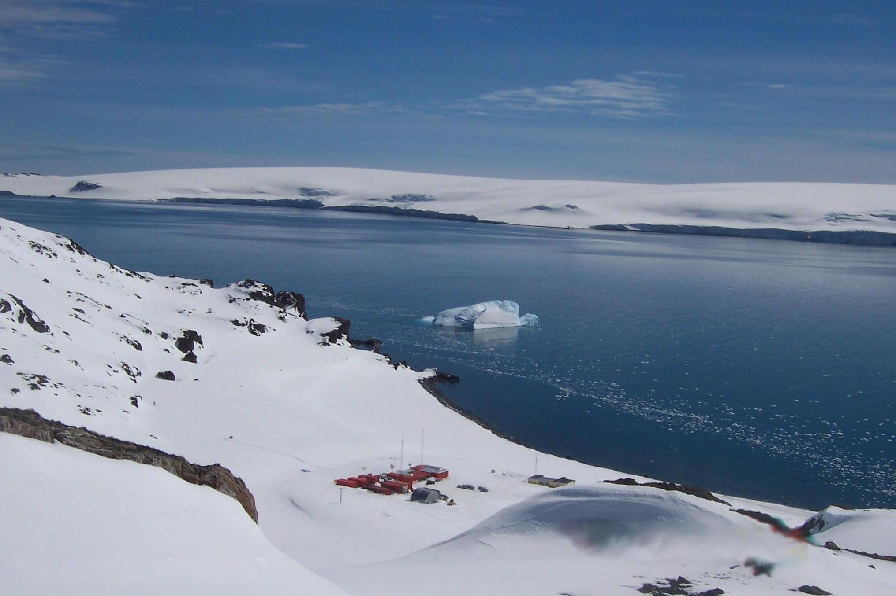

Biografía de Josefina Castellví
Datos personales
- Josefina Castellví Piulachs, o Pepita, como ella prefiere que la llamen, nació en Barcelona, el 1 de julio de 1935.
- Actualmente tiene 90 años y está jubilada, aunque colabora con el Consejo Asesor para el Desarrollo Sostenible, del Departamento de Presidencia de la Generalidad de Cataluña y da conferencias.
- Es la primera mujer española que se ha dedicado a la oceanografía y ha recibido numerosos premios.
Estudios
- Desde pequeña, Pepita fue a la escuela y luego terminó sus estudios básicos en el Instituto de Monserrat.
- A los 18 años, comenzó a estudiar Medicina como su padre, pero acabó cambiando sus intereses por la biología en la Universidad de Barcelona. Cuando finalizó la carrera, se fue a estudiar a la Universidad de la Sorbona en Francia.
- En 1960, empezó a trabajar en varios Institutos de Barcelona, donde realizó su tesis doctoral.
Trabajo
- En 1984, se embarcó en su primera campaña a la Antártida. con su amigo Antoni Ballester.
- En el verano austral de 1987-88 se instaló la base Juan Carlos I en la Antártida.
- Antoni sufrió un ictus y Pepita tomó las riendas del proyecto antártico, convirtiéndose en la primera mujer en el mundo en dirigir una base antártica.
- Además de dirigir la base durante cinco años, fue directora del ICM y fue responsable del programa nacional de investigación antártica.
